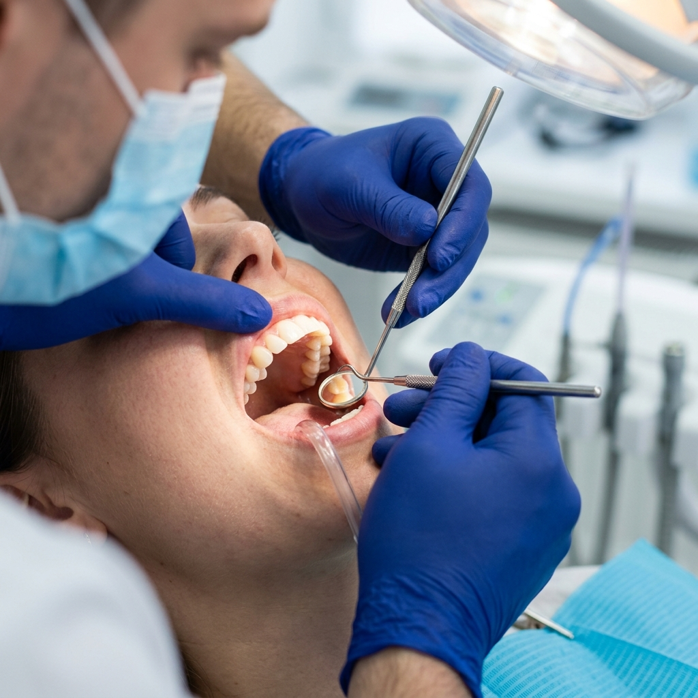
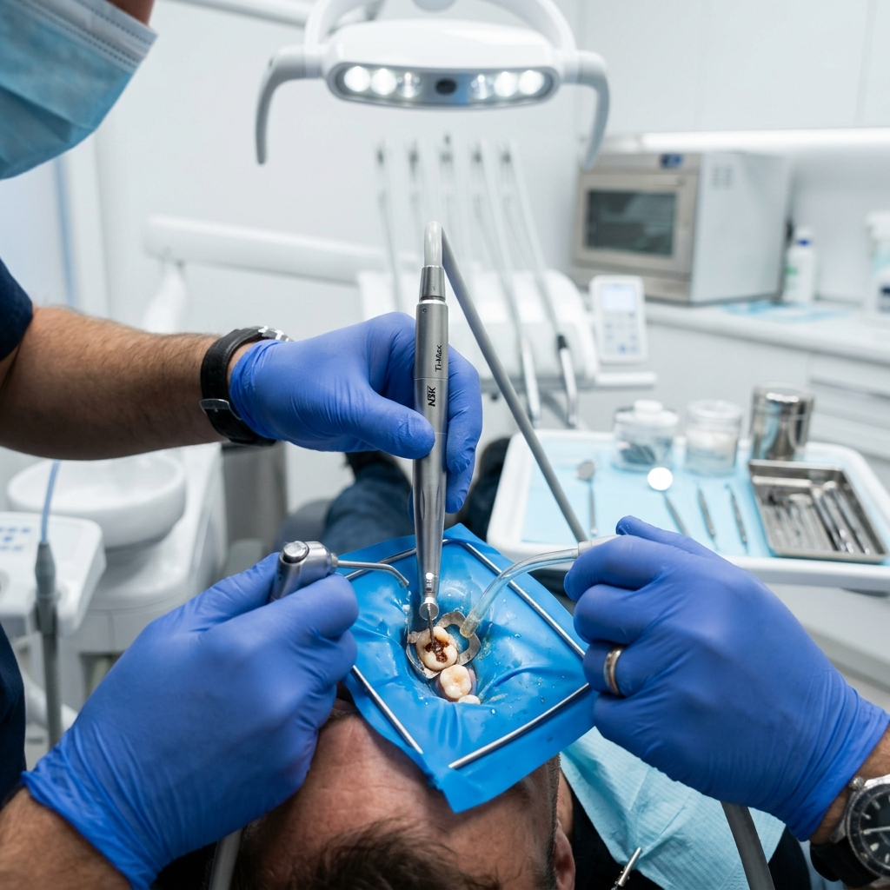
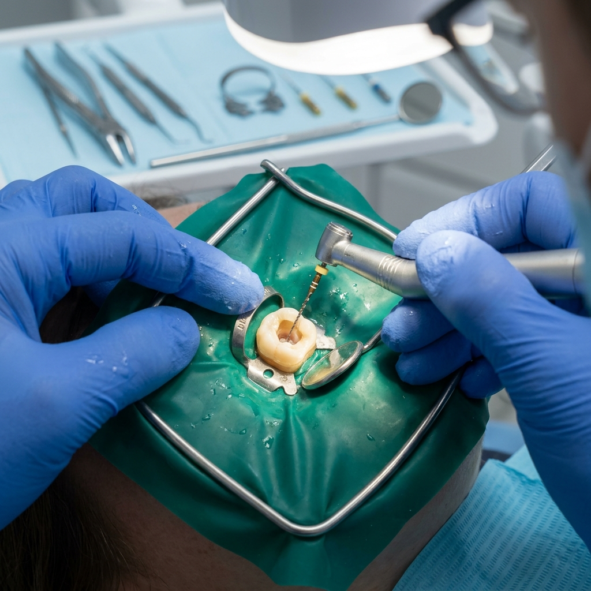
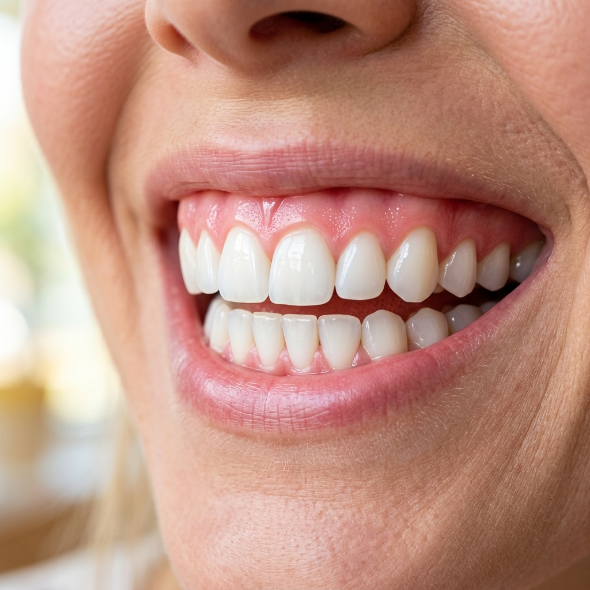
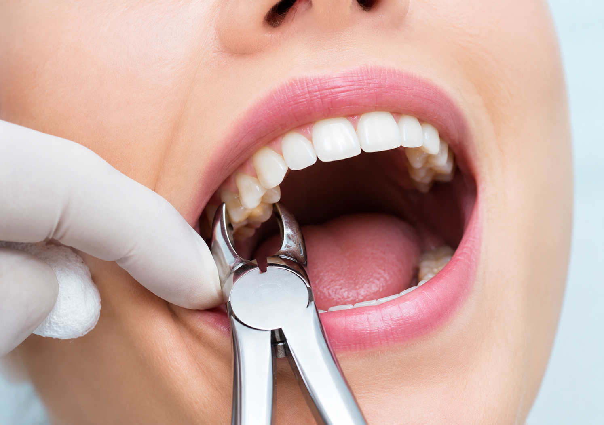
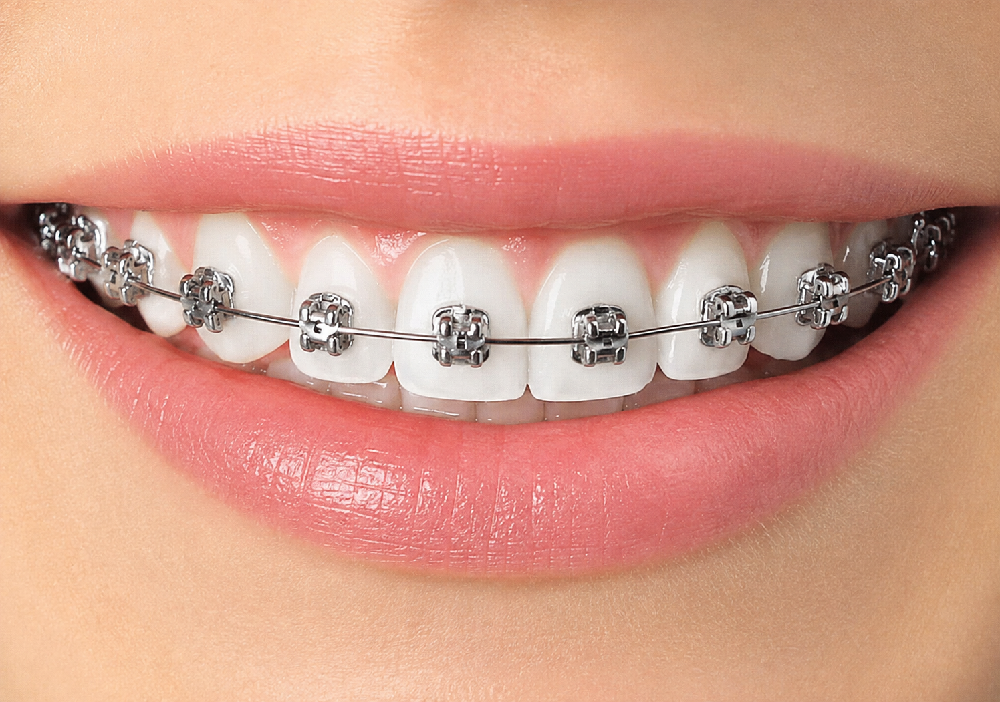
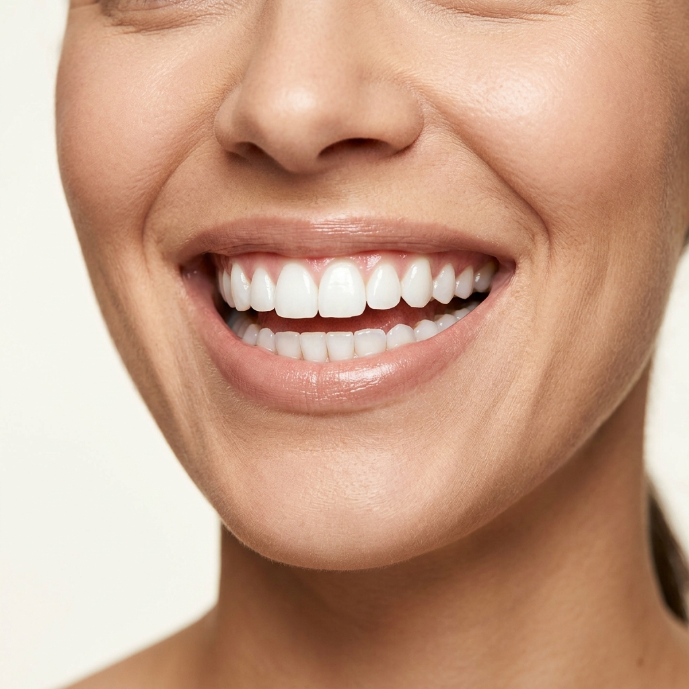
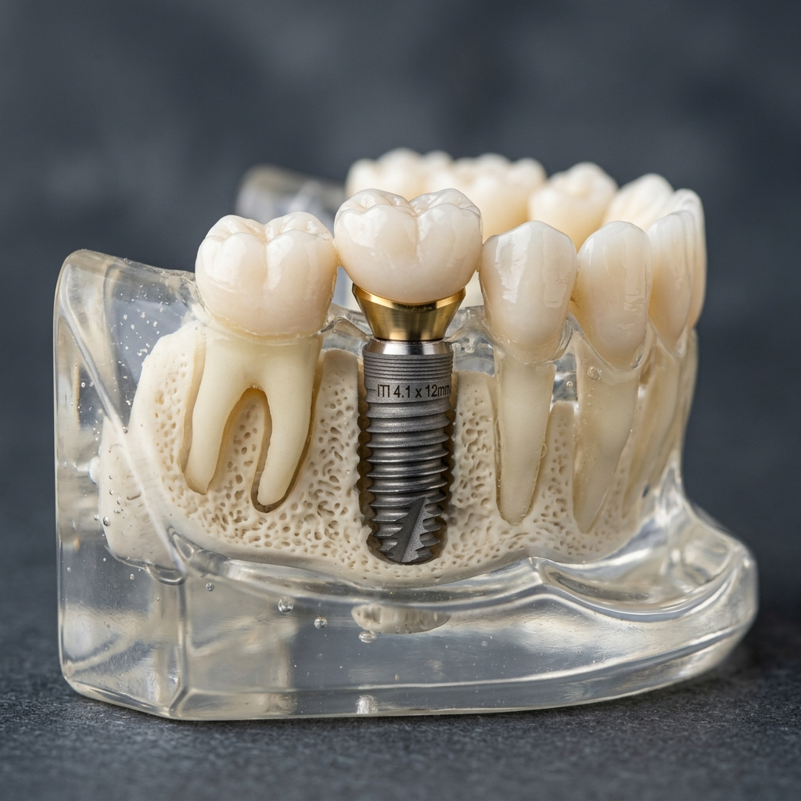
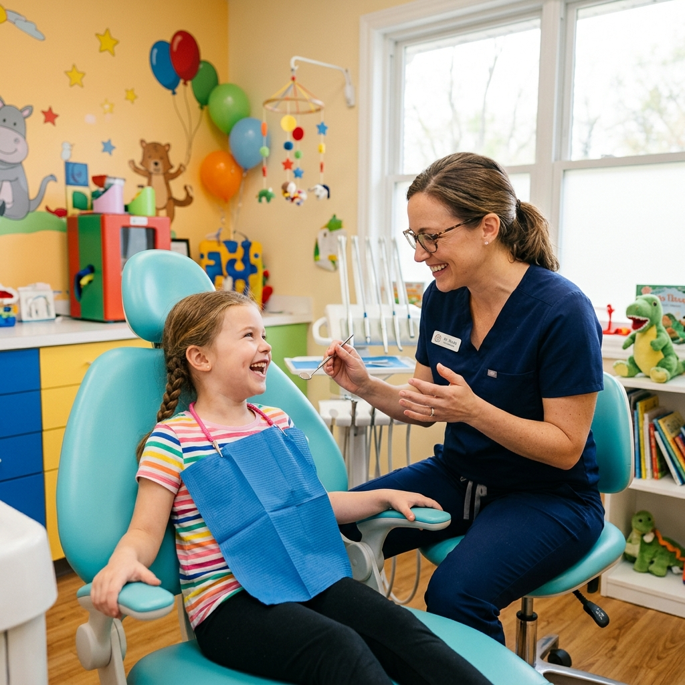
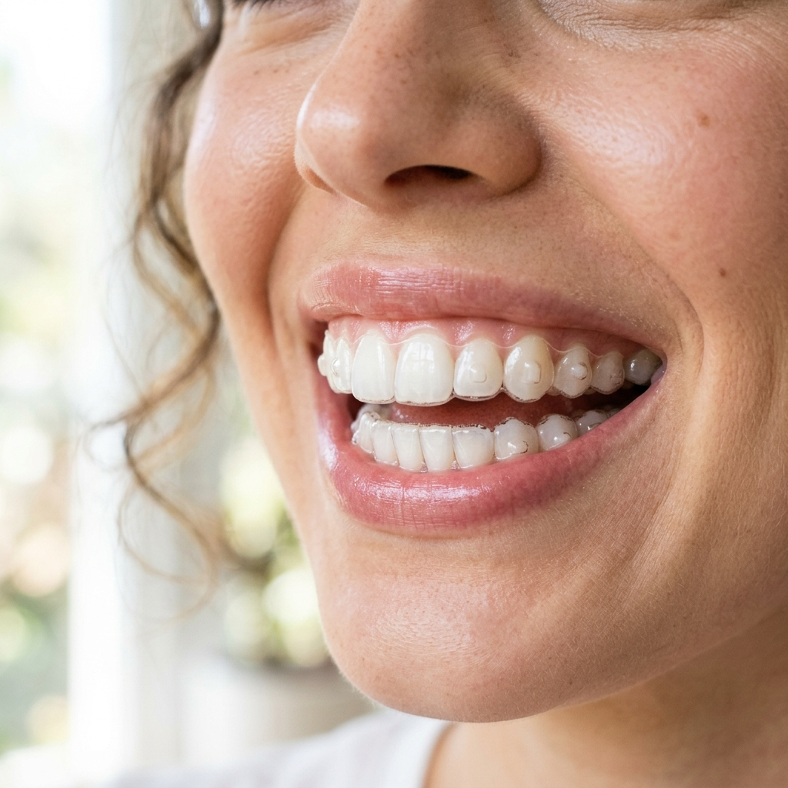

فحوصات دورية وتنظيف أسنان

فحص دوري شامل لضمان صحة أسنانك ولثتك وتجنب أي مشاكل مستقبلية.
علاج تسوس الأسنان

إزالة التسوس وترميم الأسنان بأحدث الحشوات التجميلية لتعود قوية ومطابقة للون السن.
قسم علاج العصب

إنقاذ الأسنان المتضررة من التسوس العميق أو الكسر وتسكين الألم الناتج عن الالتهاب.
علاج التهابات اللثة

رعاية متكاملة لصحة اللثة وعلاج الالتهابات لتجنب المضاعفات وضمان ابتسامة صحية.
خلع الأسنان

جراحة ضرس العقل وعمليات خلع الأسنان بكل أمان وبدون أي ألم يُذكر.
قسم تقويم الأسنان

ترتيب الأسنان وتحسين الإطباق لجميع الأعمار باستخدام التقويم المعدني والشفاف.
تنظيف وتبييض الأسنان

إزالة التصبغات والترسبات لابتسامة ناصعة البياض وصحية، باستخدام أحدث التقنيات.
قسم زراعة الأسنان

حلول دائمة لتعويض الأسنان المفقودة باستخدام أحدث التقنيات لضمان الثبات والمظهر الطبيعي.
طب أسنان الأطفال

رعاية مخصصة ولطيفة للأطفال في بيئة مرحة وآمنة لضمان ابتسامة صحية منذ الصغر.
تجميل الأسنان

احصل على ابتسامة هوليوودية مثالية مع الفينير لتصحيح عيوب الشكل واللون.